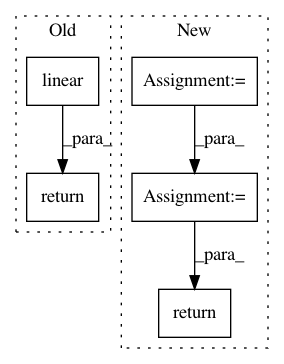

cf767a1297d67caf41577508aacc7cbc24ae8f14,scripts/gan/stylegan/modules.py,EqualLinear,hybrid_forward,#EqualLinear#Any#Any#,116
Before Change
new_weight = compute_weight(kwargs["weight_orig"])
self.linear.params[self.weight_key].set_data(new_weight)
return self.linear(x)
class AdaptiveInstanceNorm(nn.HybridBlock):
def __init__(self, in_channel, style_dim):
After Change
def hybrid_forward(self, F, x, **kwargs):
size = kwargs["weight"].shape
fan_in = prod(size[1:])
multiplier = sqrt(2.0 / fan_in)
out = F.FullyConnected(x, kwargs["weight"]*multiplier, kwargs["bias"], num_hidden=self.num_hidden)
return out
class AdaptiveInstanceNorm(nn.HybridBlock):
def __init__(self, in_channel, style_dim):
In pattern: SUPERPATTERN
Frequency: 3
Non-data size: 5
Instances
Project Name: dmlc/gluon-cv
Commit Name: cf767a1297d67caf41577508aacc7cbc24ae8f14
Time: 2020-09-16
Author: 43100519+xdeng7@users.noreply.github.com
File Name: scripts/gan/stylegan/modules.py
Class Name: EqualLinear
Method Name: hybrid_forward
Project Name: tristandeleu/pytorch-maml-rl
Commit Name: 551436a8106f3292db2f7d1a6da3462f2aa8bb6b
Time: 2018-06-14
Author: tristan.deleu@gmail.com
File Name: maml_rl/policies/normal_mlp.py
Class Name: NormalMLPPolicy
Method Name: forward
Project Name: pytorch/pytorch
Commit Name: 26f9ac98e5356bd6fa40dd723bb25ecb24cd1091
Time: 2021-02-02
Author: ngimel@fb.com
File Name: torch/nn/functional.py
Class Name:
Method Name: linear